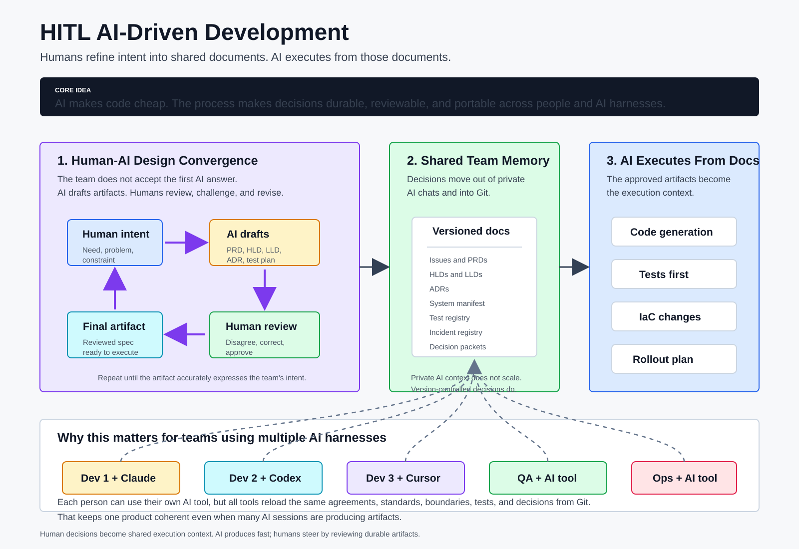

AI generates. Humans shape, review, and decide.
HITL is a delivery framework for teams that use AI heavily in non-trivial software work. These pages show what that actually looks like in practice: every step, every gate, and exactly where the humans stay in charge.
Most AI tooling accelerates generation. HITL's value is everything it establishes so that generated work is accurate — and everything it enforces so the accuracy holds at change one hundred. Each principle below is implemented by a shipped artifact or gate, not an aspiration.
The system manifest names every domain, the files it owns, and the design doc that governs it. The AI works inside an explicit map — and a boundary hook blocks edits that cross it.
system-manifest.yaml · check-domain-boundary · drift checkerEach domain declares its facade APIs with preconditions and error modes, what it mutates, and its side effects. Integration happens against declared contracts, not inferred ones.
manifest facade_apis · mutations · side_effectsConventions, the codebase map, and recovered architecture decisions are written down at onboarding. Every session reloads the same facts — the hundredth change is as grounded as the first.
conventions contract · codebase map · ADRsInterviews separate deliberate decisions from historical accident; incidents and test coverage become registries. Knowledge leaves people's heads and becomes reviewed, owned artifacts the AI queries.
architecture interview · incident + test registriesDesigns, test plans, and deploys pass through hard human gates, and reviewer agents run in a separate context from the work they judge. Every consequential action has a person in front of it.
TA design gate · QA review · operator-confirmed deploysEdits without an active tracked change are blocked. Production deploys are blocked on anything the readiness gate cannot positively validate — readiness is derived from evidence, never declared by a flag.
intake gate · check-platform-ready (fail-closed)Each step records what it produced; requirements trace to designs, tests, and deploys. "Was this reviewed?" has a checkable answer instead of a shrug.
decision packets · registries · traceability chainThe change's profile and tags derive its step plan; the risk tier decides how heavy the gates are. A typo carries minutes of process; a cross-domain feature carries the full ceremony.
6 profiles + 5 tags · risk tiersAll of it is versioned in Git, so it survives AI sessions, staff rotation, and even a change of AI harness. Many people and tools, one coherent context.
docs + registries in Git · loaded every session
The five pillars — catalog, skills, hooks, agents, templates — plus the durable memory they read and write, and the one repeating composition that turns them into every workflow step on this site.
open the architecture →All 7 workflows, their phases, 84 steps and the substep, in one collapsible tree — generated from the catalog file the running system executes, with each step's executor and owner.
open the catalog →{kind=link}